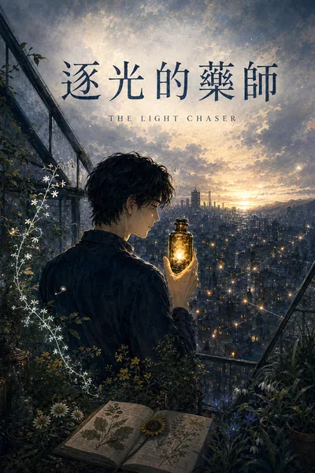
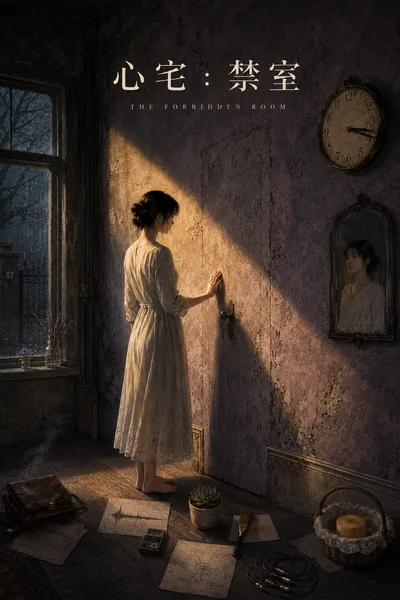
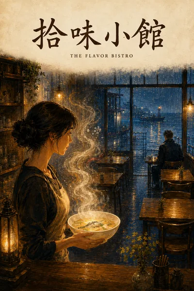

寫作頁書架預覽 · 只作提案，詳見 DESIGN_PROPOSAL.md §8.2
療癒系都市奇幻作者，已完成五部長篇作品，逾四十萬字。
療癒系都市奇幻長篇作品集

The Light Chaser
The Soul Renovator

The Forbidden Room
The Rain Seller
品牌療癒電子書

The Flavor Bistro
待出版
《拾味小館》世界的地方刊物，每週一更新
即將於方格子連載
即將連載
每週四於方格子更新
Threads @wins_twilight